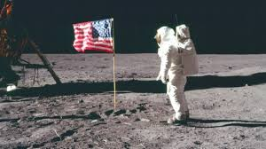

|

İlk Uzay Yarışı: ABD – SSCB
İlk Uzay Yarışı, Soğuk Savaş dönemi boyunca ABD ile Sovyetler Birliği (SSCB) arasında yaşanan teknolojik ve bilimsel bir rekabetti.
1950’li yılların sonlarında başlayan bu yarış, yalnızca uzayı keşfetmekle sınırlı kalmayıp, aynı zamanda iki süper gücün siyasi ve ideolojik
üstünlüğünü de göstermek amacı taşıyordu.
Yarışın başlangıcı, 4 Ekim 1957’de Sovyetler Birliği’nin Sputnik 1 adlı ilk yapay uydusunu Dünya yörüngesine göndermesiyle oldu. Bu olay,
ABD üzerinde büyük bir etki yarattı ve ülkeyi uzay araştırmalarında hızla ilerlemeye zorladı. Takip eden yıllarda SSCB, Laika isimli köpeği
taşıyan Sputnik 2 ile canlı varlıkların uzaya gönderilmesini başarıyla gerçekleştirdi ve 1961 yılında Yuri Gagarin’i uzaya göndererek insanlı
uzay uçuşunda öncü oldu.
ABD ise bu gelişmelere karşılık olarak NASA’yı kurdu ve Apollo programı ile Ay’a insan gönderme hedefini benimsedi. 1969 yılında Apollo 11
göreviyle Neil Armstrong ve Buzz Aldrin’in Ay’a ayak basması, ABD’nin uzay yarışında önemli bir dönüm noktası oldu. Bu başarı, ABD’nin teknolojik
ve bilimsel üstünlüğünü pekiştirdi.
İlk Uzay Yarışı, yalnızca ülkeler arası bir rekabet değil, aynı zamanda insanlığın uzay keşfi konusunda büyük bir sıçrama yapmasına da zemin hazırladı.
Yarış sonucunda geliştirilen roket teknolojileri, uydu iletişimi ve diğer uzay teknolojileri, hem bilimsel araştırmalara hem de günlük yaşama önemli
katkılar sağladı. Böylece ABD ve SSCB arasındaki bu rekabet, modern uzay araştırmalarının temelini oluşturdu.
|